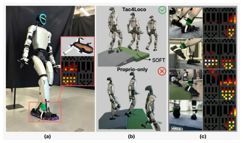
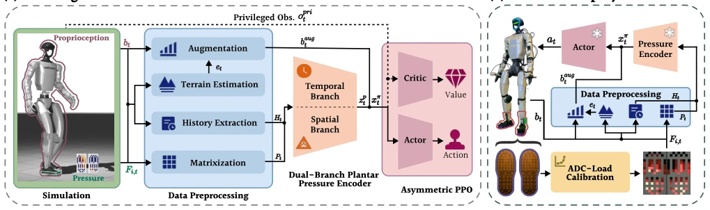
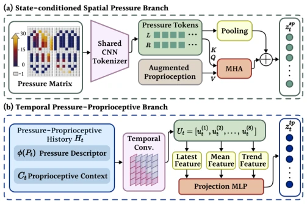
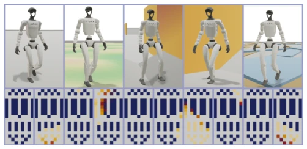
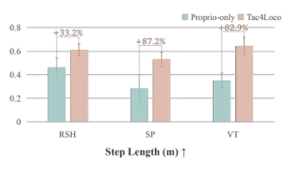
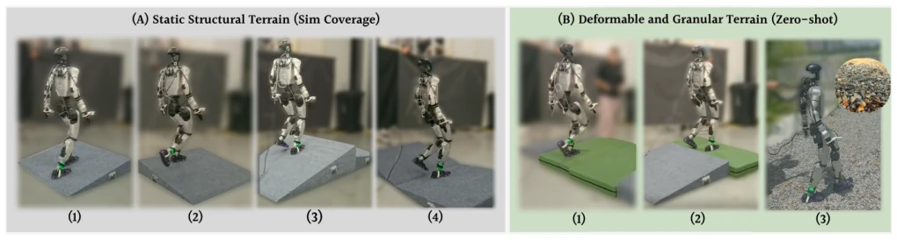

这篇论文给足底压力传感器在足式机器人控制中找了个新位置，算是给“瞎走”的机器人加了点“触觉”。Tac4Loco 的核心在于把足底压力从简单的“接触/未接触”变成了时空拓扑特征，这点挺聪明。不过，别指望它真能解决所有地形问题，毕竟仿真到现实的鸿沟不是靠几个量化 bin 就能填平的。虽然作者在泡沫和碎石路上展示了 zero-shot 能力，但硬件成本（60 个 FSR）和标定复杂度可能劝退不少想复现的人。总的来说，是个扎实的 RL+Tactile 工作，但“通用性”标签下得有点早，且对传感器噪声的鲁棒性仍需更多验证。此外，其依赖的序数量化虽然解决了非线性，但也牺牲了绝对力信息，这在需要精细力控的任务中可能是个隐患。
This paper finds a new position for plantar pressure sensors in legged robot control, essentially adding some 'tactile' sense to 'blindly walking' robots. The core of Tac4Loco lies in transforming plantar pressure from simple 'contact/no-contact' into spatiotemporal topological features, which is quite clever. However, do not expect it to truly solve all terrain problems, as the Sim-to-Real gap cannot be bridged merely by a few quantization bins. Although the authors demonstrated zero-shot capability on foam and gravel roads, the hardware cost (60 FSRs) and calibration complexity may dissuade many who wish to reproduce the work. Overall, it is a solid RL+Tactile work, but the 'generalizability' label is somewhat premature, and robustness to sensor noise still requires more verification. Additionally, while the relied-upon ordinal quantization resolves nonlinearity, it also sacrifices absolute force information, which could be a potential drawback in tasks requiring fine force control.
For humanoid robots walking on complex terrain, the greatest pain point is the 'difficulty in discerning the actual ground conditions underfoot'. Existing proprioception methods [6] can only infer support states post-hoc, lacking direct feedback; while visual perception (Exteroception) [3], [8] can only predict terrain before touchdown, unable to confirm actual contact. Although some studies introduced foot plantar contact information [12], [13], most simplify it to binary states or total force, losing the spatial topology of pressure distribution (such as edge loading, local peaks). This information loss causes robots to easily become unstable on slopes, partial support, or asymmetric loads. Therefore, how to directly utilize multi-array plantar pressure to construct spatiotemporal representations has become key to improving robustness.

Fig. 1: Real-world deployment of Tac4Loco with plantar pressure feedback. (a) Unitree G1 equipped with bilateral plantar pressure insoles. (b) Rep- resentative comparison on a compliant terrain transition, where Tac4Loco succeeds while the proprioception-only baseline fails. (c) Selected support states and their corresponding plantar pressure maps, highlighting distinct pressure topologies under different contact conditions.
Tac4Loco is an end-to-end tactile perception locomotion control framework. In terms of data flow, it receives proprioception and plantar pressure, which are preprocessed before inputting into the policy network. There are three core innovations: First is topology-preserving ordinal quantization, mapping simulation forces and physical sensor readings to shared discrete load levels, alleviating Sim-to-Real sensor nonlinearity differences. Second is the dual-branch encoder, the spatial branch uses CNN+Attention to extract instantaneous support topology, the time branch uses 1D-CNN to capture load transfer history, the two complement each other. Finally is contact-conditioned terrain-orientation estimation, combining proprioceptive states and pressure confidence to generate terrain inclination clues. These features are fused into an asymmetric Actor-Critic architecture for PPO training, outputting joint position residuals. Sensor noise and dropout augmentation were also added during training to improve deployment robustness.

Fig. 2: Overview of the Tac4Loco pipeline. During training, proprioception and raw plantar pressure measurements are collected in simulation. The pressure signals are preprocessed through matrixization, history extraction, terrain-orientation estimation, and observation augmentation, and then encoded by a dual- branch plantar pressure encoder consisting of a spatial branch and a temporal branch. The resulting tactile representation is fused with proprioception in an asymmetric actor–critic framework for policy learning. After training, the learned actor is transferred to the real robot and driven by physical plantar pressure measurements processed under the same representation.

Fig. 3: Architecture of the dual-branch plantar pressure encoder, com- prising the state-conditioned spatial branch (a) and temporal pressure– proprioceptive branch (b).
Experiments were conducted in MJLab simulation and on the Unitree G1 real robot. Simulated terrains include slopes, V-grooves, random heights, etc. Baselines compared pure proprioception strategies [25] and ablation variants. Evaluation metrics cover survival rate, velocity tracking error, and step length. Results show that Tac4Loco significantly improved survival rate on slopes and random height terrains (e.g., slopes from 22% to 77.9%). Real robot testing demonstrated zero-shot transfer capability, performing better than baselines on foam and gravel roads. Ablation experiments indicate that the pressure encoder is crucial for asymmetric support, while terrain orientation estimation helps with slope adaptation.

Fig. 4: Representative simulation terrains and the corresponding bilateral plantar pressure maps of Tac4Loco: (1) flat terrain, (2) gently undulating terrain, (3) V-trench terrain, (4) slope terrain, and (5) random support-height terrain.

Fig. 5: Step length under challenging support conditions. Error bars denote standard deviation.

Fig. 6: Real-world deployment validation of Tac4Loco. (A) Static structural terrain (covered by simulation): (1) forward traversal over a 9◦ramp and transition from its upper platform to lower flat ground; (2) lateral ascent onto a 9◦ramp; (3) transition from a 15◦ascending ramp to a 9◦descending ramp; (4) traversal of a V-trench formed by two 9◦ramps. (B) Deformable and granular terrain (zero-shot): (1) transition from rigid flat ground onto a compliant foam platform; (2) transition from a 9◦ramp onto the compliant platform; (3) gravel road.